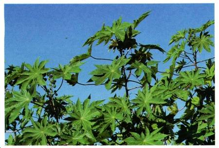
U.S. Army Field Survival Manual
POISONOUS PLANTS
Plants basically poison on contact, ingestion, or by absorption or inhalation. They cause painful skin irritations upon contact, they cause internal poisoning when eaten, and they poison through skin absorption or inhalation in respiratory system. Many edible plants have deadly relatives and look-alikes. Preparation for military missions includes learning to identify those harmful plants in the target area. Positive identification of edible plants will eliminate the danger of accidental poisoning. There is no room for experimentation where plants are concerned, especially in unfamiliar territory.
Castor bean, castor-oil plant, palma Christi
Ricinus communis
Spurge (Euphorbiaceae) Family
Description: The castor bean is a semiwoody plant with large, alternate, starlike leaves that grows as a tree in tropical regions and as an annual in temperate regions. Its flowers are very small and inconspicuous. Its fruits grow in clusters at the tops of the plants.
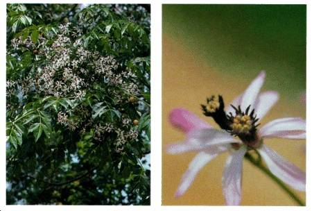
All parts of the plant are very poisonous to eat. The seeds are large and may be mistaken for a beanlike food.
Habitat and Distribution: This plant is found in all tropical regions and has been introduced to temperate regions.
Chinaberry
Melia azedarach
Mahogany (Meliaceae) Family
Description: This tree has a spreading crown and grows up to 14 meters tall. It has alternate, compound leaves with toothed leaflets. Its flowers are light purple with a dark center and grow in ball-like masses. It has marble-sized fruits that are light orange when first formed but turn lighter as they become older.
All parts of the tree should be considered dangerous if eaten. Its leaves are a natural insecticide and will repel insects from stored fruits and

grains. Take care not to eat leaves mixed with the stored food.
Habitat and Distribution: Chinaberry is native to the Himalayas and eastern Asia but is now planted as an ornamental tree throughout the tropical and subtropical regions. It has been introduced to the southern United States and has escaped to thickets, old fields, and disturbed areas.
Cowhage, cowage, cowitch
Mucuna pruritum
Leguminosae (Fabaceae) Family
Description: A vinelike plant that has oval leaflets in groups of three and hairy spikes with dull purplish flowers. The seeds are brown, hairy pods.
Contact with the pods and flowers causes irritation and blindness if in the eyes.
Habitat and Distribution: Tropical areas and the United States.
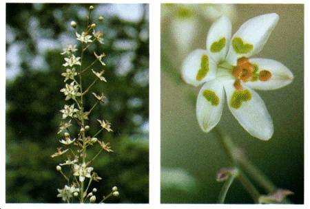
Death camas, death lily
Zigadenus species
Lily (Liliaceae) Family
Description: This plant arises from a bulb and may be mistaken for an onionlike plant. Its leaves are grasslike. Its flowers are six-parted and the petals have a green, heart-shaped structure on them. The flowers grow on showy stalks above the leaves.
All parts of this plant are very poisonous. Death camas does not have the onion smell.
Habitat and Distribution: Death camas is found in wet, open, sunny habitats, although some species favor dry, rocky slopes. They are common in parts of the western United States. Some species are found in the eastern United States and in parts of the North American western subarctic and eastern Siberia.
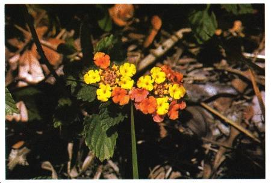
Lantana
Lantana camara
Vervain (Verbenaceae) Family
Description: Lantana is a shrublike plant that may grow up to 45 centimeters high. It has opposite, round leaves and flowers borne in flat-topped clusters. The flower color (which varies in different areas) may be white, yellow, orange, pink, or red. It has a dark blue or black berrylike fruit. A distinctive feature of all parts of this plant is its strong scent.
All parts of this plant are poisonous if eaten and can be fatal. This plant causes dermatitis in some individuals.
Habitat and Distribution: Lantana is grown as an ornamental in tropical and temperate areas and has escaped cultivation as a weed along roads and old fields.
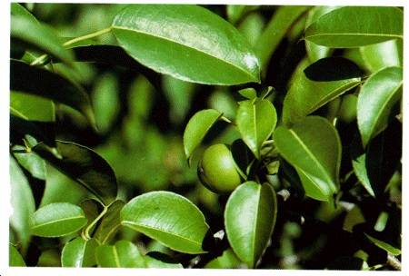
Manchineel
Hippomane mancinella
Spurge (Euphorbiaceae) Family
Description: Manchineel is a tree reaching up to 15 meters high with alternate, shiny green leaves and spikes of small greenish flowers. Its fruits are green or greenish-yellow when ripe.
This tree is extremely toxic. It causes severe dermatitis in most individuals after only.5 hour. Even water dripping from the leaves may cause dermatitis. The smoke from burning it irritates the eyes. No part of this plant should be considered a food.
Habitat and Distribution: The tree prefers coastal regions. Found in south Florida, the Caribbean, Central America, and northern South America.
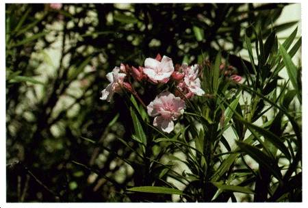
Oleander
Nerium oleander
Dogbane (Apocynaceae) Family
Description: This shrub or small tree grows to about 9 meters, with alternate, very straight, dark green leaves. Its flowers may be white, yellow, red, pink, or intermediate colors. Its fruit is a brown, podlike structure with many small seeds.
All parts of the plant are very poisonous. Do not use the wood for cooking; it gives off poisonous fumes that can poison food.
Habitat and Distribution: This native of the Mediterranean area is now grown as an ornamental in tropical and temperate regions.

Pangi
Pangium edule
Pangi Family
Description: This tree, with heart-shaped leaves in spirals, reaches a height of 18 meters. Its flowers grow in spikes and are green in color. Its large, brownish, pear-shaped fruits grow in clusters.
All parts are poisonous, especially the fruit.
Habitat and Distribution: Pangi trees grow in southeast Asia

Physic nut
Jatropha curcas
Spurge (Euphoriaceae) Family
Description: This shrub or small tree has large, 3- to 5-parted alternate leaves. It has small, greenish-yelllow flowers and its yellow, apple-sized fruits contain three large seeds.
The seeds taste sweet but their oil is violently purgative. All parts of the physic nut are poisonous.
Habitat and Distribution: Throughout the tropics and southern United States.

Poison hemlock, fool's parsley
Conium maculatum
Parsley (Apiaceae) Family
Description: This biennial herb may grow to 2.5 meters high. The smooth, hollow stem may or may not be purple or red striped or mottled. Its white flowers are small and grow in small groups that tend to form flat umbels. Its long, turniplike taproot is solid.
This plant is very poisonous and even a very small amount may cause death. This plant is easy to confuse with wild carrot or Queen Anne's lace, especially in its first stage of growth. Wild carrot or Queen Anne's lace has hairy leaves and stems and smells like carrot. Poison hemlock does not.
Habitat and Distribution: Poison hemlock grows in wet or moist ground like swamps, wet meadows, stream banks, and ditches. Native to
Eurasia, it has been introduced to the United States and Canada.
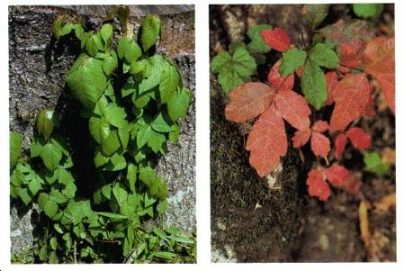
Poison ivy and poison oak
Toxicodendron radicans and Toxicodendron diversibba
Cashew (Anacardiacese) Family
Description: These two plants are quite similar in appearance and will often crossbreed to make a hybrid. Both have alternate, compound leaves with three leaflets. The leaves of poison ivy are smooth or serrated. Poison oak's leaves are lobed and resemble oak leaves. Poison ivy grows as a vine along the ground or climbs by red feeder roots. Poison oak grows like a bush. The greenish-white flowers are small and inconspicuous and are followed by waxy green berries that turn waxy white or yellow, then gray.
All parts, at all times of the year, can cause serious contact dermatitis.
Habitat and Distribution: Poison ivy and oak can be found in almost any habitat in North America.
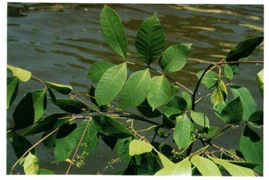
Poison sumac
Toxicodendron vernix
Cashew (Anacardiacese) Family
Description: Poison sumac is a shrub that grows to 8.5 meters tall. It has alternate, pinnately compound leafstalks with 7 to 13 leaflets. Flowers are greenish-yellow and inconspicuous and are followed by white or pale yellow berries.
All parts can cause serious contact dermatitis at all times of the year.
Habitat and Distribution: Poison sumac grows only in wet, acid swamps in North America.
Renghas tree, rengas tree, marking nut, black-varnish tree
Gluta
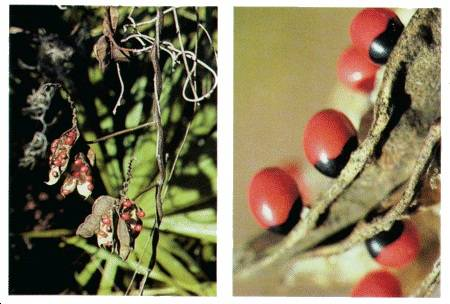
Cashew (Anacardiacese) Family
Description: This family comprises about 48 species of trees or shrubs with alternating leaves in terminal or axillary panicles. Flowers are similar to those of poison ivy and oak.
Can cause contact dermatitis similar to poison ivy and oak.
Habitat and Distribution: India, east to Southeast Asia.
Rosary pea or crab's eyes
Abrus precatorius
Leguminosae (Fabaceae) Family
Description: This plant is a vine with alternate compound leaves, light purple flowers, and beautiful seeds that are red and black.
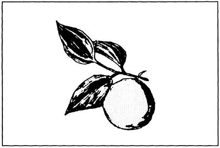
This plant is one of the most dangerous plants. One seed may contain enough poison to kill an adult.
Habitat and Distribution: This is a common weed in parts of Africa, southern Florida, Hawaii, Guam, the Caribbean, and Central and South
America.
Strychnine tree
Nux vomica
Logania (Loganiaceae) Family
Description: The strychnine tree is a medium-sized evergreen, reaching a height of about 12 meters, with a thick, frequently crooked trunk. Its deeply veined oval leaves grow in alternate pairs. Small, loose clusters of greenish flowers appear at the ends of branches and are followed by fleshy, orange-red berries about 4 centimeters in diameter.
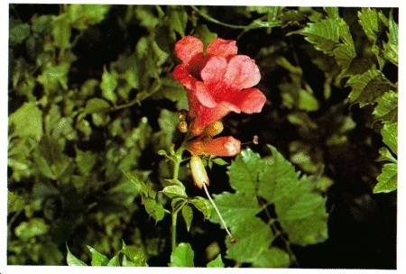
The berries contain the dislike seeds that yield the poisonous substance strychnine. All parts of the plant are poisonous.
Habitat and Distribution: A native of the tropics and subtropics of southeastern Asia and Australia.
Trumpet vine or trumpet creeper
Campsis radicans
Trumpet creeper (Bignoniaceae) Family
Description: This woody vine may climb to 15 meters high. It has pealike fruit capsules. The leaves are pinnately compound, 7 to 11 toothed leaves per leaf stock. The trumpet-shaped flowers are orange to scarlet in color.
This plant causes contact dermatitis.
Habitat and Distribution: This vine is found in wet woods and thickets throughout eastern and central North America.

Water hemlock or spotted cowbane
Cicuta maculata
Parsley (Apiaceae) Family
Description: This perennial herb may grow to 1.8 meters high. The stem is hollow and sectioned off like bamboo. It may or may not be purple or red striped or mottled. Its flowers are small, white, and grow in groups that tend to form flat umbels. Its roots may have hollow air chambers and, when cut, may produce drops of yellow oil.
This plant is very poisonous and even a very small amount of this plant may cause death. Its roots have been mistaken for parsnips.
Habitat and Distribution: Water hemlock grows in wet or moist ground like swamps, wet meadows, stream banks, and ditches throughout the
Unites States and Canada.